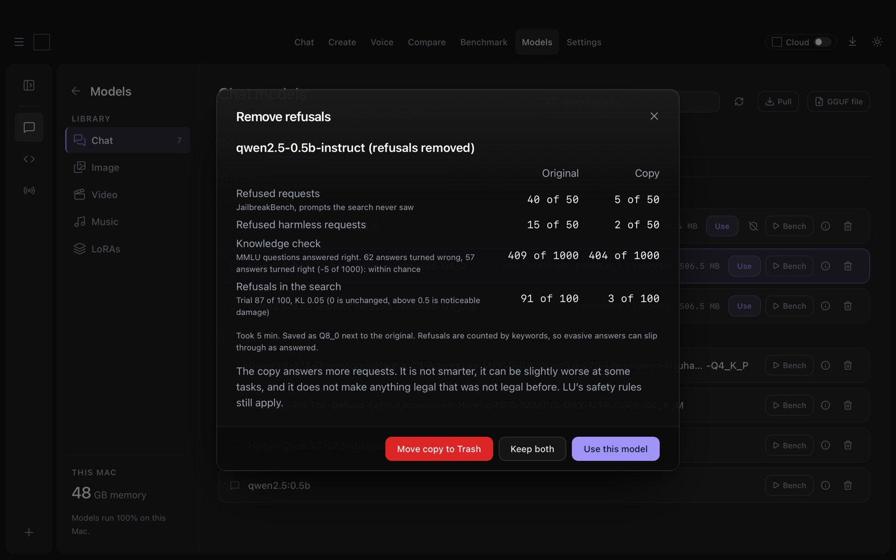

We Removed the Refusals from a Model and Measured What It Cost
Since 3.0.8, Locally Uncensored can make a copy of a local model that refuses fewer requests. The button is called Remove refusals, it runs on your own computer, and the original file stays untouched. The question everyone asks about this kind of tool is the same: does the model get dumber?
So we measured it, before and after, on the same prompts and the same knowledge test. On the model we tested, refusals dropped from 39 of 50 to 3 of 50, and the knowledge test went from 409 to 410 right answers out of 1000. We also found out that a smaller test would have told us the opposite, and that is why LU now asks 1000 questions.
What we ran
- Model: Qwen2.5-0.5B-Instruct (Apache 2.0), the copy saved as Q8_0 like the original.
- Method: Heretic 1.4.0, the tool LU runs inside, on the setting Balanced, with a damage limit of KL 0.2 and 200 search trials.
- Machine: a Windows PC with an RTX 3060, running the same script and settings the app uses, with llama.cpp on Vulkan for the checks. A second run in the app itself on a Mac (Apple Silicon, 48 GB), with 100 trials.
- Refusals: 50 prompts from JailbreakBench that the search never saw, and 50 harmless requests that models often refuse anyway.
- Knowledge: 1000 multiple choice questions from MMLU, the same 1000 for both versions.
The numbers
| Original | Copy | |
|---|---|---|
| Refused JailbreakBench prompts | 39 of 50 | 3 of 50 |
| Refused harmless requests | 15 of 50 | 2 of 50 |
| Refusals during the search | 91 of 100 | 3 of 100 |
| MMLU, right answers | 409 of 1000 | 410 of 1000 |
| Change from the original (KL) | 0 | 0.044 |
Windows PC, RTX 3060, 200 trials. The search took 22 minutes, merging and converting the copy to GGUF about a minute, each check about 80 seconds.
The Mac run with 100 trials came out close: 40 to 5 refusals on JailbreakBench, 15 to 2 on the harmless set, and 409 to 404 on MMLU. That last difference is within chance, more on that below. The first run on the Mac took 32 minutes, including the download of PyTorch and the weights.

The harmless row matters as much as the first one. A model that refuses to explain how to kill a stuck Python process is not safer, just less useful. The copy refused 2 of those 50 instead of 15.
Why 200 questions were not enough
Our first knowledge check used 200 MMLU questions. The original got 88 right, the copy 79. That looks like a loss of 4.5 points, and the app would have said so.
Then we asked 1000 questions. The first 200 were the same ones as before. The result: 409 for the original, 410 for the copy. The other 800 questions made up the difference and more. The 9 lost points came from which 200 questions we happened to ask, not from the model.
LU now judges the difference like this. It counts the answers that changed between the two versions, in either direction. If the net change is smaller than twice the square root of that count, it calls the result within chance. With 200 questions, 17 answers changed and the net was 9, against a limit of 8.2, so it would have reported a real loss. With 1000 questions, 97 answers changed, the net was +1, and the limit was 19.7. Since 3.0.9 the app asks 1000 questions and shows that verdict on the result card.
The extra questions cost under a minute per check on a 0.5B model. For a 7B or 8B model we expect 5 to 10 minutes more per check, and the time estimate in the dialog includes it.
What this does not show
- We tested one small model. A 0.5B model is quick to measure. It says little about how a 27B model reacts, and we have not run one through the full measurement.
- Refusals are counted by keywords. An answer that dodges the question without the usual phrases counts as answered. The result card says so.
- MMLU checks knowledge. It does not check writing, role play or code, and a copy can be slightly worse at some of those.
- The copy answers more requests. It is not smarter, and it does not make anything legal that was not legal before.
We do not publish the answers the copy gave to the JailbreakBench prompts. The prompts themselves are public at JailbreakBench, and LU does not keep the questions or answers of a check after it shows the counts.
Try it on your own model
- Install Locally Uncensored 3.0.9 and download a chat model as GGUF.
- Open Models and pick Remove refusals next to the model. LU finds the original weights, shows the license, and plans memory, disk and time before anything is downloaded.
- Choose how far (Gentle, Balanced or Strong) and how long to search (Quick or Thorough), confirm you are 18 or older, and click Start.
- When the run is done, the card shows both versions side by side. Keep both, use the copy, or move the copy to the Trash.
Everything runs on your computer and nothing is uploaded. If you would rather pick a model that someone has already processed, the abliterated models guide lists the ones worth downloading.
Related
- Abliterated models in 2026, what abliteration is and which models to get
- Locally Uncensored 3.0.9, everything in the release
- The best uncensored AI models in 2026